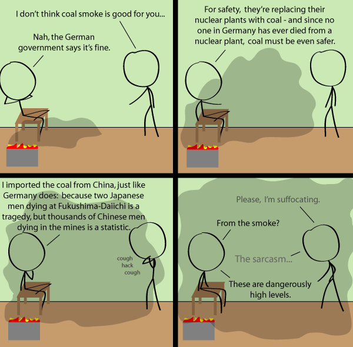

Comic JK 698
When I Feel Like It
⇤
<
?
>
⇥

⇤
<
?
>
⇥
Forum
.
RSS
.
Digg
.
Facebook
.
Reddit
.
Twitter
.
Stumbleupon
Or, we could just burn your mother's farts. So true :-( (I'm German) > ditto (2 of 400, yay) >> Here be number 3. But I have to say, though the point of the comic is quite valid, it's a bit more complicated than that (who would have guessed?)... >>> 4, but yeah, people are scared of nuclear and rather then teach them the truth, they just change to satisfy them. >>>> 5. Burning coal even sets free significant amounts of radioactive materials. > German number 6, btw there is also cheap nuclear power from France ;) Oh for crying out loud... german number 7 This comic makes a very valid and often ignored point. Thank you for writing it.